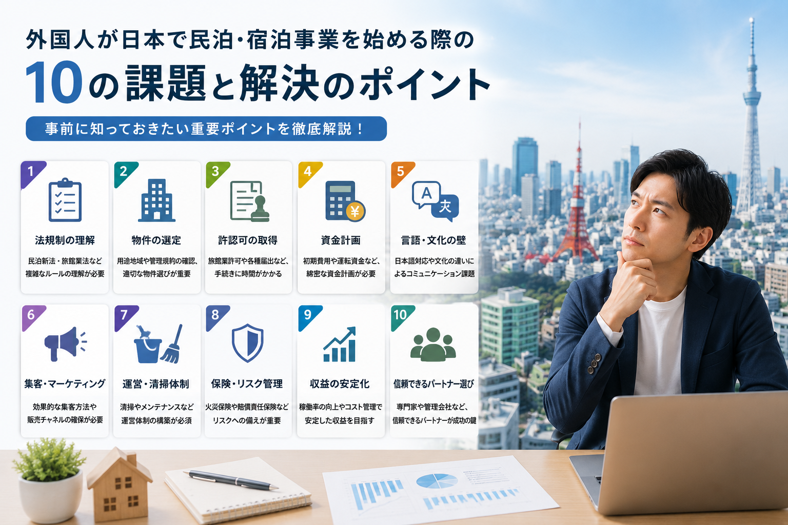

10 Challenges Every Accommodation Owner Faces

Running an accommodation business in Japan is rewarding but comes with significant challenges. Whether you operate a hotel, ryokan, or private lodging, these 10 challenges are common across the industry. Understanding and preparing for them can make the difference between a struggling property and a thriving operation.
1. Guest Acquisition
Getting your property in front of the right guests requires mastery of OTA platforms (Booking.com, Airbnb, Expedia, Rakuten Travel), search engine optimization, and pricing strategy. Many new operators struggle to achieve visibility in a crowded market.
2. Cleaning Quality
Consistently high cleaning standards are non-negotiable. Guest reviews often hinge on cleanliness, and managing a reliable cleaning team — especially for turnover on busy check-in/check-out days — is a major operational challenge.
3. Review Management
Online reviews directly impact your booking rate and pricing power. Responding to reviews professionally, addressing complaints promptly, and maintaining a high average rating requires dedicated attention.
4. Dynamic Pricing
Setting the right price for each night based on demand, seasonality, events, and competitor pricing is complex. Revenue management skills are essential for maximizing occupancy and ADR.
5. Regulatory Compliance
Japan's accommodation regulations vary by ward and license type. Keeping up with changing requirements, filing reports, and maintaining compliance across multiple properties is a significant administrative burden.
6. Multilingual Support
International guests expect communication in their language. Providing multilingual check-in instructions, in-room guides, and responsive customer support requires translation capabilities and cross-cultural understanding.
7. Guest Communication
Pre-arrival instructions, check-in coordination, handling special requests, and post-stay follow-up — all require efficient systems. Missed communication leads to poor reviews and operational headaches.
8. Maintenance and Repairs
Property maintenance is ongoing. From HVAC issues to plumbing problems and appliance failures, having a reliable network of contractors who respond quickly is essential.
9. Neighbor Relations
Accommodation operations can cause friction with neighbors — noise, trash, parking. Maintaining good relationships and addressing complaints promptly is critical, especially under local ordinances that require neighborhood consideration.
10. Revenue Management
Ultimately, all the above challenges affect your bottom line. Managing costs, optimizing revenue, and ensuring sustainable profitability requires ongoing attention to every aspect of the business. Many operators benefit from professional management support.
For accommodation launch, operations, or investment — consult Kaisei
Consultations are free. Feel free to reach out.
Free Consultation